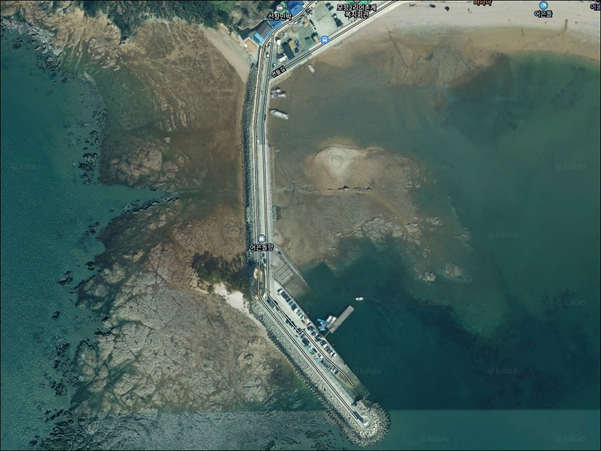
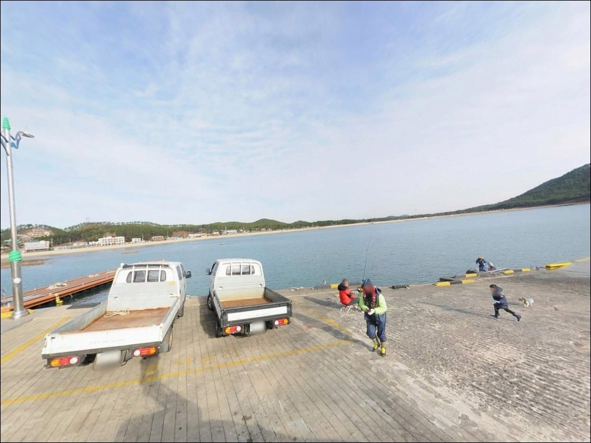
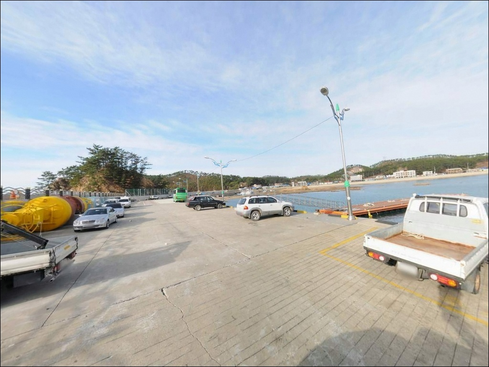
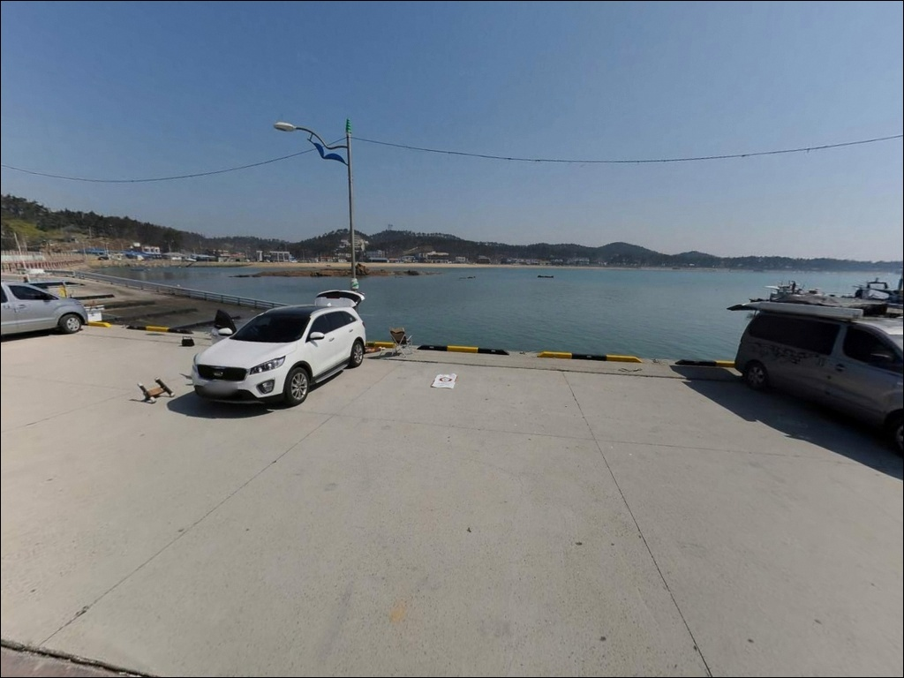
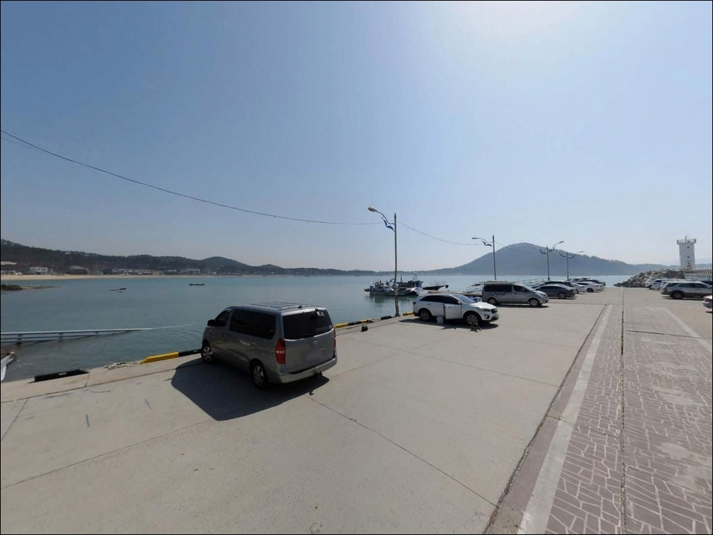
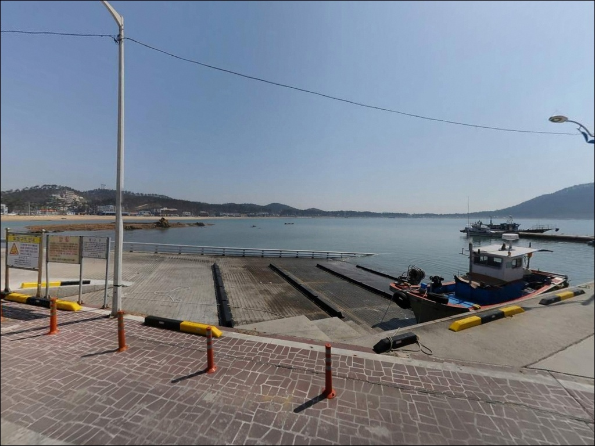
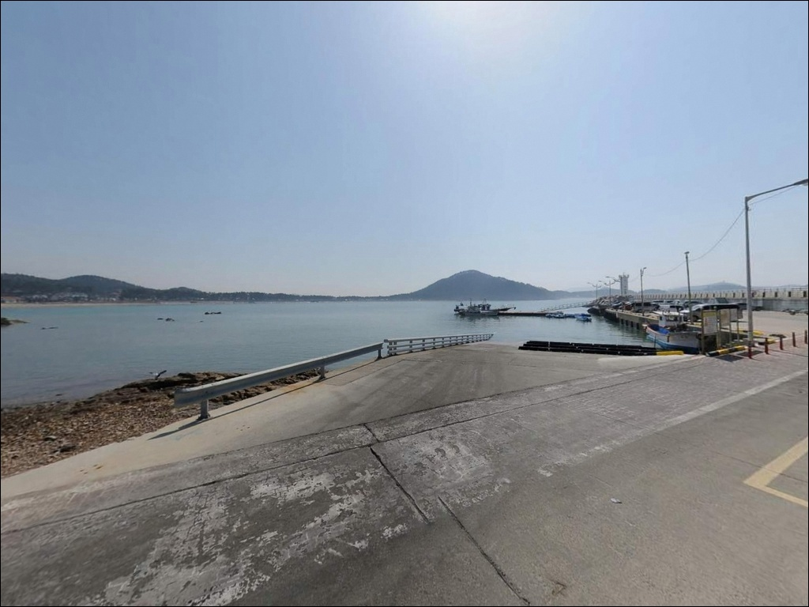
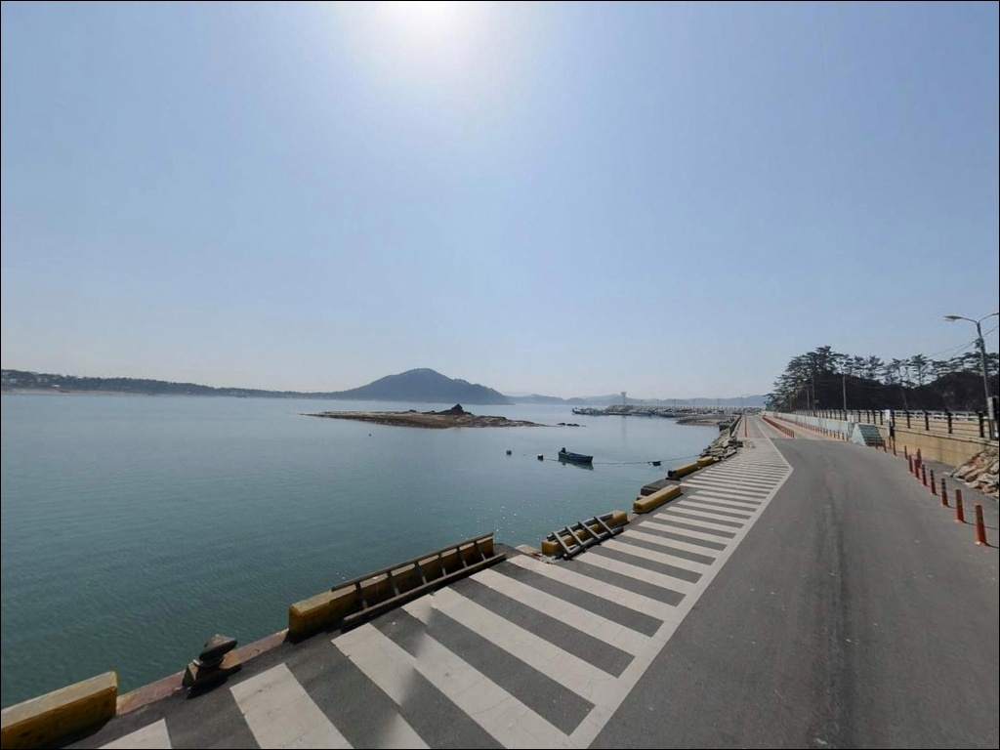
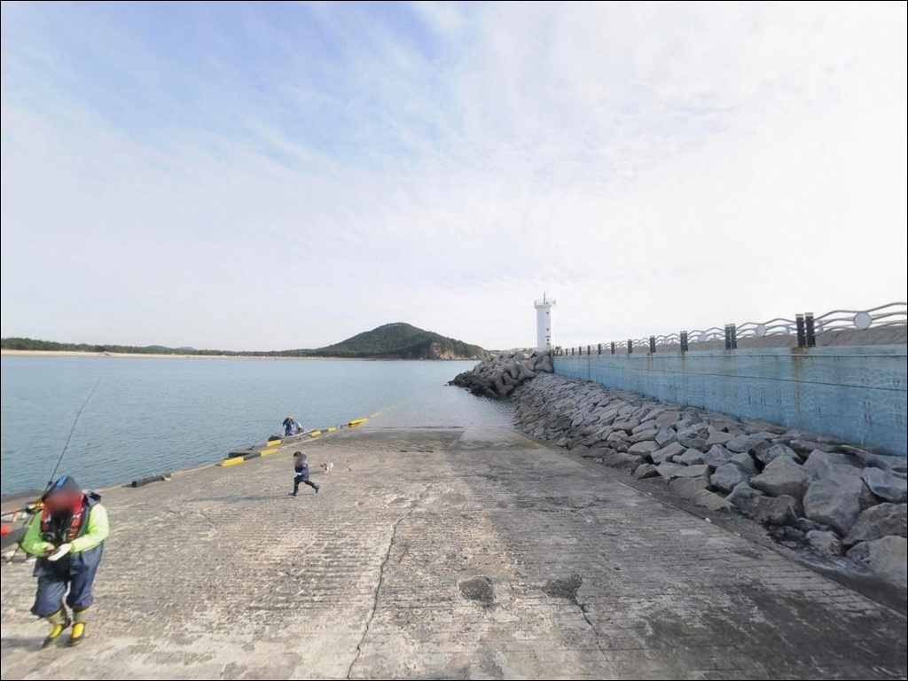

어은돌항, 충남 태안군 감성적인 차박, 낚시 포인트
이 페이지에는 광고(제휴 링크 포함)가 있으며, 광고 링크를 통해 구매하면 운영자가 판매 수익 또는 수수료를 받을 수 있습니다. 포인트 사진: 카카오맵 스카이뷰·로드뷰. 이 페이지의 지도·사진 이미지는 카카오맵의 실제 서비스 이미지와 다를 수 있습니다.


어은돌항
충남 태안군 소원면 모항리 1097-21
어은돌항을 찾는 낚시인이
가장 많이 놓치는 판단은
물때와 자리 선택입니다.
서해 특성상 간조·만조 전후로 유속이 크게 달라지고,
방파제 외항과 내항 중 어느 쪽에 채비를 던지느냐에 따라
하루 조과가 갈립니다.
내항은 잔잔하고 외항은 조류를 직접 받는 구조라,
같은 포인트 안에서도 자리에 따라
어울리는 낚시 방식이 달라집니다.
이 글은 어은돌항의
지형 구조, 진입 환경, 낚시 방식별 적합성에 집중합니다.
조황 단정이나 확정되지 않은 시설 정보는
이 글의 범위에 포함하지 않습니다.

1. 진입 동선과 포인트 접근성
어은돌항까지 이어지는 도로는 포장 상태로,
승용차 기준 진입에 큰 어려움은 없는 편입니다.
다만 모항리 해안 마을 특성상
진입로 폭이 좁아지는 구간이 있을 수 있어,
대형 SUV나 캠핑 차량이라면
출발 전 지도 앱으로 경로를 확인해두는 편이 좋습니다.
마을 구간을 통과하는 구조이므로
교행 시 속도 조절이 필요합니다.
주차는 방파제 진입부 인근 공터를 활용하는 방식이
일반적이며, 공식 여행 정보에서도
주차시설이 안내되어 있습니다.
다만 어업 작업 차량 이동 동선과 겹칠 수 있으므로,
차량을 세운 위치가
어선 출입항 동선을 막지 않는지
먼저 확인하는 것이 기본 매너입니다.
소규모 어항 특성상 조업 시간대에는
공간이 제한될 수 있습니다.
대형 차량의 경우
항구 내 회차 공간이 충분하지 않을 가능성이 있습니다.
초행이라면 방파제 진입부가 아닌
해변 인근 공터를 먼저 살펴보는 동선이 현실적입니다.

2. 차박 환경과 야간 체류 여건
어은돌항은 어은돌해수욕장과 맞닿아 있는
관광지 성격의 항구입니다.
인근에 캠핑장과 숙박 시설이 있어
여름 성수기에는 차량과 방문객이 집중되는 편으로,
이 시기 조용한 차박 여건을 기대하기는 어렵습니다.
봄·가을 비수기에는 한산한 분위기가 유지되어
낚시 후 하룻밤 머무는 용도로는 나쁘지 않습니다.
야간 조명은 캠핑장과 주변 상가 불빛이 있어
완전한 암흑 환경은 아닐 가능성이 있습니다.
방파제 끝단은 항법용 등대 외
별도 조명이 없는 편이라
야간 낚시 시
개인 헤드랜턴이 필수입니다.
해수욕장과 인접한 개방형 지형이라
바람 영향도 있을 수 있으므로
출발 전 풍속 예보를 확인해두는 편이 좋습니다.


3. 주변 편의시설 및 인프라 현황
어은돌항은 관광지로 등록된 항구로,
주변에 식당과 숙박 시설이 분포해 있습니다.
성수기에는 항 주변에서 식사 해결이 가능한 편이지만,
비수기에는 운영 여부를 사전에 확인하는 것이 좋습니다.
반경 약 2~3km 거리에 모항항이 있습니다.
국가어항으로 지정된 규모 있는 항구로,
인근 상권과 수산물 판매가 이루어지는 곳입니다.
어은돌항에서 부족한 낚시 소품이나 식재료를
보충해야 할 때
이 방향을 활용하는 편이 현실적입니다.
편의점이나 마트의 정확한 위치는
출발 전 지도 앱으로 확인하는 것이 좋습니다.
완전 자급이 어려운 상황이라면
태안 소원면 소재지 방향에 들러
준비하는 동선이 안전합니다.

4. 방문 전 준비사항 및 체크 포인트
어은돌항 방문에서 가장 중요한 사전 확인은
물때입니다.
바다타임에서 모항항 기준 물때를 확인하고,
들물·날물 전환 전후 타이밍을 출발 전에 잡아두는 것이
기본 전략입니다.
서해는 조수간만 차가 크고
간조 시 갯벌이 드러나는 구간이 있어,
물때에 따라 낚시 가능 자리 자체가 달라지는 경우가 있습니다.
갯바위 구간 진입 시에는
만조 기준 수위 변화를 반드시 확인해야 합니다.
만조 시 접근이 어려워지거나
고립될 수 있는 구간은
낮은 수위에서 미리 파악해두는 것이 안전합니다.
단독 갯바위 진입은 되도록 피하는 것이 기본 매너입니다.
채비는 여분을 넉넉히 준비하는 편이 좋습니다.
모래와 암초가 섞인 바닥 특성상
밑걸림이 발생할 수 있어,
봉돌과 바늘을 여유롭게 챙기는 것이
현장에서의 판단을 편하게 합니다.
야간 낚시를 병행할 계획이라면
헤드랜턴과 구명조끼는 필수입니다.

5. 지형 기반 낚시 여건 분석
어은돌항의 방파제는 항을 감싸는 곡선형 구조로,
내항은 파도 차단 효과가 있어
수면이 비교적 안정적인 편입니다.
외항 방향은 서해 개방형에 가까운 형태이며,
방파제 끝단으로 갈수록
조류 영향이 커지는 구간이 됩니다.
녹색 등대가 위치한 방파제 끝단을 기점으로
수심이 상대적으로 깊어지는 경향이 있어,
이 구간이 원투와 루어 자리로 주목받는 이유입니다.
바닥은 모래와 암초가 혼합된 구조로 추정됩니다.
항 이름이 '고기가 숨을 돌이 많은 마을'에서
유래했다는 기록이 있는 만큼,
갯바위와 암초 분포가
어류 은신처로 기능하는 구조입니다.
방파제 초입보다 외항 끝단 쪽으로
채비를 멀리 보내는 방식이
이 포인트 바닥 구조에 맞는 운용입니다.
외항 방파제 끝단은 조류 변화를 직접 받아
루어와 원투 자리로 유리한 구간입니다.
최신 조황은 방문 전 반드시 검색해 보시기 바랍니다.


6. 외항 방파제에서 루어 반응이 살아나는 조건
이 포인트에서 루어낚시에 가장 잘 맞는 자리는
방파제 외항 끝단과 갯바위 경계 구간입니다.
조류 흐름이 살아 있을 때
테트라포트 주변이나 갯바위 모서리를
그럽웜·지그헤드 조합으로 천천히 탐색하는 방식이 맞습니다.
이 해안선에서
우럭(조피볼락), 노래미, 광어, 농어 계열이
기대해볼 수 있는 어종입니다.
방파제 외항 방향과 갯바위 주변으로
채비를 던져 바닥층을 노리는 원투낚시도
이 지형에 잘 맞는 스타일입니다.
서해 특성상 청갯지렁이 미끼가 기본이 되며,
조류가 약해지는 정조 전후에
채비가 안정적으로 자리를 잡는 편입니다.
내항 쪽 잔잔한 구간은 찌낚시에 어울립니다.
수면이 안정적인 내항에서
학꽁치나 고등어 등 회유성 어종이 접근하는 시기에
찌낚시 시도 여지가 있습니다.
가을 쭈꾸미 시즌에는
외항 갯바위 구간에서 에깅이나 루어 탐색도
고려해볼 수 있는 구조입니다.

7. 대안 포인트와 플랜 B 동선
어은돌항이 여의치 않을 때
가장 먼저 이동할 대안은 모항항입니다.
약 2~3km 거리에 있는 국가어항으로,
방파제와 석축 발판이 안정적이고
낚시 접근성이 좋은 편입니다.
태안 지역에서 우럭낚시 명소로 알려진 포인트로,
어은돌항보다 규모와 인프라 여건이
갖춰진 편입니다.
약 2km 거리의 통개항도
같은 소원면 해안선에 위치한 소규모 항입니다.
어은돌항과 유사한 서해 방파제 구조로,
자리나 조류 조건이 맞지 않을 때
동선에 묶어 탐색해볼 수 있는 인근 포인트입니다.
만리포항 방파제는 약 5km 거리로,
규모 있는 방파제와 배낚시 출조 인프라가 갖춰진 곳입니다.
어은돌항으로 출발해 만리포항으로 마무리하는 동선도
이 권역에서 자연스러운 이동 경로입니다.
차박이란 차량을 숙박 공간으로 활용하며
현장에서 하룻밤 머무는 여행 방식으로,
인근 오토캠핑장을 대안으로 두는 것도
플랜 B 준비 기준이 됩니다.

물때를 맞추면
어은돌항이 다르게 보입니다
갯바위와 곡선형 방파제를 동시에 갖춘 구조라는 점에서,
어은돌항은 외항 루어, 갯바위 원투, 내항 찌낚시까지
목적에 따라 자리를 골라 쓸 수 있는 포인트입니다.
온라인에 정보가 많지 않은 편이라
직접 탐색하는 재미가 있는 곳이기도 합니다.
다만 서해 물때를 모르고 가면
어느 방식으로도 채비가 자리를 잡지 못하는 상황이 생깁니다.
들물·날물 전환 타이밍을 먼저 잡고,
갯바위 수위 변화를 사전에 확인한 뒤 자리를 선정하는 것이
이 포인트의 기본 접근법입니다.
모항항이나 통개항을 플랜 B로 두고
출발한다면 하루를 허비하는 경우가 줄어드는 편입니다.
어은돌해수욕장 옆에 자리한 항구라는 입지 덕분에
차박 여건도 나쁘지 않습니다.
비수기에 방문한다면
물때를 맞추고, 자급 준비를 갖추고,
서해 앞에 조용히 차를 세우는 하룻밤은
기억에 남을 수 있는 출조가 됩니다.